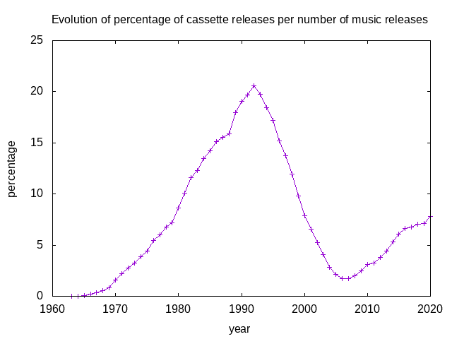

Breve Introdução ao git, gitlab e github
Todos os anos em Outubro acontece o Hacktoberfest: um evento que funciona como um concurso, em que se incentiva e promove a colaboração em projectos de Software Livre.
Tal como no ano passado, a ANSOL está a promover e facilitar a participação ao Hacktoberfest, apoio esse que vai ser pontuado com alguns eventos ao longo do mês.
Para começar, vou amanhã (dia 13 de Outubro, às 22h) fazer uma apresentação introdutória sobre git, ferramenta que é utilizada no Hacktoberfest, ainda que maioritariamente focando na sua utilização nas plataformas gitlab ou github - que são as usadas no evento.

Assim, estão todos convidados a assistir a esta pequena apresentação online e gratuita, mesmo que não tenham interesse em depois participar no Hacktoberfest.
tags: ANSOL, git, gitlab, github, hactoberfest, presentation, Free-Software, pt
Lamego 2022 - o antes e o depois

|
Estou de regresso à escrita, e à Ficção Científica. Desta vez, participo com um pequeno conto para o livro "Lamego 2022 - o antes e o depois", uma colectânia de textos nos mais variados formatos e estilos, que olha para a cidade onde nasci - não só como ela é hoje, mas na sua História passada e história futura. O lançamento deste livro vai ser já no próximo dia 5 de Junho, enquadrado no festival "Lamego Cidade Poema". |
tags: livro, escrita, Lamego, SciFi, pt
O Voto Eletrónico e o Solucionismo Tecnológico
"No estrangeiro, os portugueses votam principalmente por voto postal", diz a TSP, sublinhando que "este sistema já funcionava mal em vários países", mas que nas últimas eleições "não chegou praticamente nenhum voto da África do Sul", e que agora com a pandemia "o sistema postal está próximo do colapso em países tão evoluídos como o Reino Unido".
Então: nós que andamos nisto da democracia já há alguns aninhos, ainda não conseguimos fazer um sistema de voto por correspondência a funcionar decentemente. Um problema que tem, como solução, corrigir os problemas do sistema de voto postal, certo? Errado! Para a TSP - que aproveita para nos dar mais alguns detalhes sobre o que se passa com a proposta do voto electrónico remoto para as eleicões do CCP (agora sabemos que está a ser um trabalho conjunto do MAI, a AMA e o MNE) - a solução não é corrigir um sistema de fácil compreensão e tecnologia provada como o sistema de voto por correspondência, mas sim o voto eletrónico remoto.
Defendem que "Portugal é um país inovador e com técnicos de nível mundial, que podem produzir um sistema de voto eletrónico remoto seguro, testado e auditável", (sem dizer onde se basearam para fazer tal afirmação). Ficamos sem entender porque é que, se temos assim tão boas capacidades técnicas, como é que o voto por correspondência funciona tão mal - como é que não temos a morada certa dos eleitores, não sabemos explicar como se vota e nem sequer preparar boletins que caibam nos envelopes. Mas sim, vamos entregar-lhes a preparação de um sistema de voto electrónico, remoto, seguro, anónimo, fiável. O que pode correr mal?
tags: voto, electrónico, voto-electrónico, vote, e-vote, TSP, correspondência, voto-correspondência, pt
Happy 20th birthday, ANSOL!
Today we celebrated the 20th anniversary of ANSOL, the Portuguese Free Software Association. It has been an honor to be part of the history of this still young association, and here's hope for an active 20 years more - I'll gladly celebrate its 40th!

In these past 20 years, ANSOL worked on many issues, but if I had to highlight 3, I'd point out:
- the fight against Software Patents in Europe - which stopped (or stalled?) software patents;
- the Open Standards Law in Portugal - ahead of the curve;
- the Portuguese anti-DRM law.
But there are many more challenges ahead... and our victories aren't closed books.
- The Unified Patent Court in Europe is about to become a reality, and with it Software Patents;
- The Open Standards Law in Portugal exists, but in practice it is isn't being actually applied;
- And while we have a good protection against DRM in law (as far as we can within the EU, thanks to InfoSoc), there is now a covert attempt to water it down.
So, what now? Well, there is plenty to do: we should ensure we don't loose the Freedoms we have achieved, and we should strive to get those we still didn't get.
There is plenty more to do, and you can help.
If you're in Portugal, join ANSOL. If you're in Europe, FSFE will appreciate your contribution. If you're in Latin America, here's your link. In India, join here. Based in North America, with worldwide mission, there's FSF.
Of course, as we could see in those who have joined ANSOL in today's celebration, there is plenty beyond the realm of software. Consider getting to know Wikimedia Portugal or the Wikimedia Foundation, Direitos Digitais in Portugal and EDRI in Europe or EFF overseas.
Let's shape the future, together.
tags: ANSOL, Free-Software, Digital-Rights, en
Are Cassette tapes dead? (again)
Tired of reading people saying that one or another mature technology was dead, ten years ago I decided to act upon one of those claims (saying that cassette tapes were dead) and write a blog post, where, using the data available on Discogs, I made a graph showing the percentage of cassette releases related to all of the releases on that database.
That blog post had more success than I thought would have, with some people, once in a while, wondering how were things progressing (not only regarding the cassette tapes market on current days, but also the growth of discogs' database and its knowledge of past releases). I did update the graph a few times since the initial blog post, but today, to mark the 10th anniversary of the initial post, I decided to actually write a script that automatically generates such a graphic, and generate one of those graphs, once again.
And, guess what!, turns out cassette tapes aren't dead, or even dying.

tags: discogs, stats, cassette, tape, compact cassette, music, data, software, music business, music market, en
O manifesto das cebolas na era da transição digital
Ocorre-me com regularidade que eu escrevo demasidos comentários em redes sociais efémeras por natureza, ideais que rapidamente se perdem em eternos scrolls. Este é um texto que escrevi numa thread no twitter e que agora republico aqui, para mais fácil guardar para a posteridade.
Em 2012, a ANSOL - Associação Nacional para o Software Livre, lançou o seu manifesto do campo das cebolas. Aí criticava o esbanjar de dinheiros públicos na aquisição - frequentemente ilegal - de software.
A ESOP - Associação de Empresas de Software Open Source Portuguesas, fez de um desses contratos exemplo: levou a Câmara Municipal de Almada a tribunal e ganhou. Mas de que serve uma vitória, num caso, se a prática se mantém?
Em 2013, observaram um aumento de 143% no valor destes contratos ilegais. Tinha já, entretanto, entrado em funcionamento o mecanismo de pareceres prévios da AMA. Ainda assim...
Em 2017, numa investigação do Público, chega-se à conclusão que, neste aspecto, nada mudou para melhor. Diz-se, então, que esta prática "deveria merecer uma acção da Comissão Europeia." Hoje fala-se de transição digital, mas sobre isto nada foi feito.
Hoje lembrei-me disto, porque alguém reclamava deste contrato, em que o SNS gasta perto de 300 mil euro em licenças de Office 365. Dir-me-ão que o SNS, agora, não tem alternativa noutro fornecedor. Já estava previsto no manifesto da ANSOL:
"provavelmente dirão que não têm conhecimento de alternativas ou que têm conhecimento mas não têm capacidade para as implementar e gerir. Ou pior, dirão que devido às decisões que eles mesmo tomaram no passado - que os deixaram enredados num esparguete de dependências"
Mas, convém sublinhar, também diz o manifesto das cebolas, "quem paga somos nós", e há alternativa.
Estes milhões são nossos. Até quando estaremos dispostos a esbanjá-los assim?
tags: pt, ANSOL, ESOP, SNS, Microsoft, Licenças, Office-365, Office, manifesto, contratos, públicos, ilegais, contratos-públicos, contratos-ilegais, transição, digital, transição-digital
Voto electrónico em Portugal - mais do que um problema técnico, um problema legal
O debate do voto electrónico tem décadas, mas, ainda que a investigação na área tenha apresentado evoluções, a discussão sobre a temática nem por isso. Pilotos atrás de pilotos, e tentativas de implementar o voto electrónico em Portugal vieram e falharam, mas pode-se sempre apontar o dedo a uma coisa: uma fraca implementação. Esse problema tem duas facetas: se, por um lado, aqueles que se opõe na generalidade ao voto electrónico têm uma forma fácil de apontar o dedo à má impementação e dizer "vêm?, não presta!", esse argumento acaba por não convencer aqueles que são a favor do voto electrónico, com o argumento de que "lá porque este foi mal feito, não quer dizer que não se possa fazer bem".
Também foi assim nas últimas Europeias, que em Portugal incluiram um piloto de voto de electrónico, que correu francamente mal - porque (adivinhe-se) tinha uma implementação má. Mas se a experiência serviu para alguma coisa, no que diz respeito à comunicação social e ao debate político, foi para por o tema outra vez na agenda política, e nunca se falou em portugal sobre o voto electrónico como hoje. Em vez que servir como prova de que o voto electrónico é uma má ideia, o exemplo serviu para aguçar apetites.
Mas, para o debate - se alguém o quiser efectivamente ter, e de forma séria - sobre a implementação de um sistema de voto electrónico em Portugal, o melhor contributo deste exemplo piloto que tivemos foi o post-mortem feito pela CNPD. O documento, que fez headlines nos jornais, e que demonstra que a implementação da solução usada era má, foi, mais uma vez, usado por vários como ponto de partida para dizer "a solução é má, mas podem haver boas." Contudo, parece-me, quem diz isso não olhou para o documento como um todo.
O parecer da CNPD é uma leitura no total interessante, mas há um segmento em particular que me parecem muito útil. Mas, para quem pensava que ia ler um artigo a falar blockchain ou de consenso bizantino... lamento. O excerto do parecer que me parece valer a pena destacar é o que demonstra que o problema do voto electrónico em Portugal é, mais do que um problema técnico, um problema legal. Não me refiro à parte que diz "qualquer solução precisa de ser legislada exaustivamente, o que não tem acontecido" (o que é verdade, mas é resolúvel apenas com a criação de mais legislação), mas sim à parte que diz:
a questão da transparência elencada no n.º 1 do artigo 5.º do RGPD tem de ser tida à luz da possibilidade de os titulares dos dados (leia-se "eleitores") poderem compreender, de forma completa (ainda que não exaustiva), como decorrem as operações de tratamento que incidem sobre os seus dados pessoais, entre as quais se encontra a votação.
É importante, porque declara que, à luz do RGPD (em vigor não só em Portugal mas nos diversos estados membros), obriga-se a que um sistema eleitoral - que por natureza lida com eleitores e seus votos - seja compreensível pela generalidade dos eleitores, coisa que não pode acontecer num sistema da complexidade exida por um sistema fiável de voto electrónico.
A CNPD aponta para o exemplo da Alemanha, em que este conflicto entre os sistemas de voto electrónico e a compreensão pelo cidadão comum do seu funcionamento foi levado ao seu Tribunal Constitucional, levando à decisão de não implementação de voto electrónico, mas não é só na Alemanha que esta questão precede o RGPD. No texto da associação D3 - Defesa dos Direitos Digitais - sobre o voto electrónico, escrito em antecipação às europeias - quando a última experiência de voto electrónico decorreu em Portugal - lê-se:
todo o cidadão deve poder compreender ele próprio o funcionamento do sistema eleitoral do país, qualquer que seja o sistema, por forma a ter suficiente confiança de que este está em conformidade com a lei. Uma solução digital será sempre uma solução demasiado complexa, mesmo para os eleitores mais esclarecidos, o que irá inevitavelmente trazer desconfiança ao processo legislativo e aos seus resultados por parte de quem tenha resultados inferiores ao que esperava.
Mas será assim? Bem, em Portugal existem vários actos eleitorais, cada um com a sua Legislação aplicável. Temos, por exemplo, na Lei Eleitoral dos Órgãos das Autarquias Locais (que rege as Autárquicas que em breve decorrerão em território nacional), o Artigo 52.º que diz:
Cabe à Comissão Nacional de Eleições promover, através de meios de comunicação social, públicos e privados, o esclarecimento objectivo dos cidadãos sobre o significado das eleições para a vida do País, sobre o processo eleitoral e sobre o processo de votação.
Terá a CNE os meios necessários para cumprir tal artigo - no que diz respeito ao esclarecimento objectivo sobre o processo eleitoral - se o processo for por via electrónica?
Em jeito de conclusão
Tem-se discutido cada vez mais sobre o voto electrónico em Portugal. Contudo, tem-se falado do tema como se ele fosse maioritariamente um desafio técnico, quando, a meu ver, os entraves são legislativos. Não estou a defender que o "direito ao esclarecimento" deve ser posto de parte, mas acredito que é aí que o debate se deve centrar. A legislação actualmente em vigor - tanto nacional como comunitária - defende esse direito ao esclarecimento, que é incompatível com um sistema de voto electrónico(1). Acredito que haja quem ache que ter voto electrónico é mais importante - mas então é esse o argumento que deve ser feito por quem assim o acha, em particular devendendo as alterações legislativas necessárias. Esse debate pode trazer algum fruto. O técnico, parece-me, está ao mesmo nível em 2021 que estava há duas décadas atrás, e assim continuará.
repo: using a local manifest
One of the useful and rarely mentioned configurations of repo is the use of local manifests.
See, repo is a powerful tool when you need to deal with a project that uses
several git repositories at the same time, and those are controled by a
manifest file. However, on your local development environment, you will often
want to extend or change something on the environment described on the
manifest, either by removing, adding or more often replacing one of the entries
with a slightly different configuration.
You can do that by using a local manifest, that will be applied on the top of the other manifest files. The CyanogenMod project used to have a pretty nice documentation about this, but that's one of the contents that were not migrated into Lineage OS's wiki, so I decided to make this blog post, reproducing the old wiki's content.
The local manifest
Creating a local manifest allows you to customize the list of repositories
used in your copy of the source code by overriding or supplementing the default
manifest. In this way, you can add, remove, or replace source code in the
official manifest with your own. By including repositories (which need not even
reside on GitHub) in a local manifest, you can continue to synchronize with the
repo sync command just as you would have previously. Only now, both the
official repositories from the default manifest and the additional repositories
you specify will be checked for updates.
Adding and replacing repositories
To add to the contents of the default manifest, create a folder called
local_manifests under the .repo directory, then create an XML file (text
file with .xml extension) inside that directory. You can call the XML file
anything you like, as long as it ends in .xml. The default however is
roomservice.xml. Also, you can create separate XML files for different groups
of repositories. e.g. mako.xml for Google Nexus 4 related repositories and
cat-eater.xml for an unofficial device on which you're working.
Let's start with an example which we can use to describe the syntax:
<?xml version="1.0" encoding="UTF-8"?>
<manifest>
<remote name="omap" fetch="git://git.omapzoom.org/" />
<remove-project name="CyanogenMod/android_hardware_ti_omap3" />
<project path="hardware/ti/omap3" name="platform/hardware/ti/omap3" remote="omap" revision="jb-dev"/>
</manifest>
The first line containing <?xml version="1.0" encoding="UTF-8"?> is a
standard XML declaration, telling interpreters this is an eXtensible Markup
Language file. Once this is established, the <manifest> and </manifest>
tags enclose some contents which the repo command will recognize.
First, a remote for git is declared and given the name "omap". In git, a
remote essentially refers to a place and method for accessing a git repository.
In this case, omapzoom.org is a site that contains special up-to-date
repositories for Texas Instrument's OMAP platform. This is equivalent to the
following git command:
git remote add omap git://git.omapzoom.org/
The next line removes a project (specifically,
cyanogenmod/android_hardware_ti_omap3) declared in the default manifest.
After running repo sync, it will no longer be available in the source tree.
The next line defines a new project. In this case, it replaces the removed
project android_hardware_ti_omap3 with one from Texas Instruments, using the
"omap" remote that was defined above.
When adding a new project that replaces an existing project, you should always remove that project before defining the replacement. However, not every new project need replace an existing cyanogenmod project. You can simply add a new project to the source code, such as when you want to add your own app to the build.
Note that when adding new projects, there are at least three parts defined:
- remote -- the name of the remote. this can be one that was defined in either the default
manifestorlocal_manifest.xml. - name -- the name of the git project-- for github it has the format
account_name/project_name. - path -- where the git repository should go in your local copy of the source code.
- revision -- (optional) which branch or tag to use in the repository. If this attribute is omitted,
repo syncwill use the revision specified by the<default ... />tag in the default manifest.
After creating .repo/local_manifests/your_file.xml, you should be able to
repo sync and the source code will be updated accordingly.
Note: You can use local repositories in the manifest by creating a remote
that points to file:///path/to/source. For example: <remote
name="local-omap" fetch="file:///home/username/myomap" />
License
All textual content of the CyanogenMod Wiki was released under the Creative Commons Attribution-Share Alike 3.0 Unported license (CC-BY-SA), and so this blog post should be considered licensed under the same terms.
tags: repo, manifest, local-manifest, local_manifests, git, en
Dia Mundial da Internet
Feliz dia mundial da Internet! Sabias que...
- Há 30 anos atrás (1990) foi organizada a 1ª Convenção Portuguesa de Unix.
- Há 29 anos atrás (1991) foi montado o ".PT" ...
- Há 28 anos atrás (1992) o tld "PT" foi reconhecido. O primeiro talker Português foi criado.
- Há 27 anos atrás (1993) a EUNET era assim:

- Há 26 anos atrás (1994) teve lugar no LNEC, o seminário "Portugal na Internet". Ligar à internet em Portugal era assim:

- Há 25 anos atrás (1995) foi fundado o SAPO, na Universidade de Aveiro.
- Há 24 anos atrás (1996) existem 10 entidades com licença para prestação de Serviços de Telecomunicações Complementares Fixos, no âmbito dos quais se pode enquadrar o acesso à Internet.
- Há 23 anos atrás (1997) a PTNET, a maior rede de IRC Portuguesa, foi criada. Pulhas, Toxyn e KaotiK iniciam a sua campanha de hacktivismo por causa da ocupação a Timor.
- Há 22 anos atrás (1998) a Saber & Lazer - Informática compra o SAPO.
- Há 21 anos atrás (1999) a Sonaecom cria a Novis, resultante da compra da IP Global, e a marca Clix para o mercado residencial. A Esoterica é comprada pela VIA NET.WORKS.
- Há 20 anos atrás (2000) a EUnet Portugal passa a KPNQwest.
- Há 19 anos atrás (2001) a ANSOL - Associação Nacional para o Software Livre, é anunciada, durante a edição de 2001 do "Porto, Cidade Tecnológica".
- Há 18 anos atŕas (2002) tanto o SAPO como o Clix lançam as suas ofertas de ADSL.
- Há 17 anos atrás (2003) a moda dos blogs chega em força a Portugal, com a criação do serviço SAPO Blogs.
- Há 16 anos atrás (2004) a Novis adquiriu a KPNQwest Portugal (antiga EUNet Portugal), ficando assim com o legado do primeiro ISP em Portugal (ainda enquanto PUUG).
- Há 15 anos atrás (2005) o Clix lançou no mercado uma oferta de 16Mbps utilizando a tecnologia ADSL2+.
- Há 14 anos atrás (2006) o Clix lançou para o público a SmarTV, um serviço de Televisão Digital e Home Video utilizando o sistema IPTV sobre a tecnologia ADSL2+, sendo a primeira oferta em Portugal a utilizar esta tecnologia.
- Há 13 anos atrás (2007) a marca Novis foi incorporada pela marca Optimus. O evento SAPO Codebits teve a sua primeira edição.
- Há 12 anos atrás (2008) apareceu a Clix Fibra, a primeira oferta comercial em Portugal de ligação à internet através de fibra óptica.
Contact Tracing
Pensei fazer um tweet, e quando dei conta tinha monologado uma thread bem grande. Para facilitar a sua leitura, decidi publicar essa thread aqui.
O Ricardo Lafuente escreve mais um interessantíssimo artigo no seu blog, desta vez sobre Contact Tracing.
Todo o artigo é bom (e leitura recomendada), mas gosto principalmente por estas duas frases que, em meu entender, são as que metem o dedo bem mesmo na ferida:
Seria ótimo termos em mãos a informação sobre o que se pretende implementar em Portugal, mas não existe ainda qualquer documento formal a descrever o que se está a preparar, apenas comentário de imprensa. Não pode ser assim, se estamos a falar de uma decisão sócio-política com implicações que ainda não conseguimos quantificar enquanto sociedade, mas cujo desfecho definirá as nossas existências nos tempos que aí vêm.
A meu ver, não podemos continuar a estar nesta situação em que aparentam estarem a testarem-se águas sobre várias soluções e a tentar formar opinião pública, sem que todas as cartas sejam postas em cima da mesa. É assim que temos coisas como este artigo da DECO, ao mesmo tempo que temos a admissão, mesmo dos proponentes deste tipo de apps, que, na realidade, a privacidade não está garantida, apesar dos riscos estarem minimizados (supostamente: nos promenores, encontram-se diversos compromissos a serem tomados mas várias soluções).
O artigo da DECO tb é apresentado como "país quer ARCs", quando na realidade os números que lá se vêm falam do inverso: afinal, "a maioria" pouco importa neste discurso, menos de 60% da população se voluntaria para o uso, e sem 60% estas apps são inúteis, dizem os estudos.
De notar que, pelo que se vai sabendo pela imprensa, a "app oficial", apoiada pelo Governo, será a StayAway, do INESC TEC. Mais uma vez, só se sabe dessa app o que vai aparecendo na imprensa, mas já com detalhes que levantam muitas questões.
Mas será mesmo assim? Urge que o Governo seja claro e transparente. Vai mesmo adoptar uma ferramenta? Haverá ainda espaço para o debate público sobre esta matéria? A adoptar, será mesmo a StayAway? Se sim, há ainda espaço para debate sobre as decisões de arquitectura da solução?
Urge termos respostas para estas perguntas. Até lá, será útil ler o artigo de ontem da ACM sobre o tema. Destaco três frases:
No known tracing applications can fully preserve individual privacy and anonymity, while multiple technical issues hinder the ability to prove or assume the apps' accuracy.
Moreover, high technical quality and functionality are insufficient for ensuring their efficacy.
Mechanisms should be employed for seeking the public’s and civil society representatives’ comment on proposed contact tracing technology and all aspects of its intended deployment.